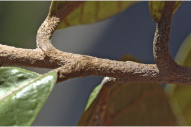
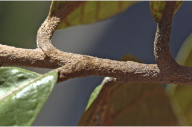
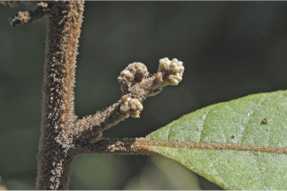
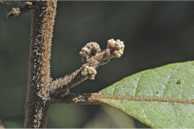
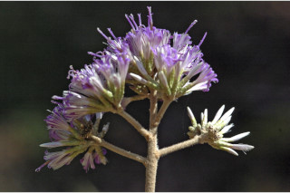
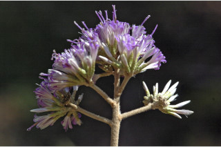
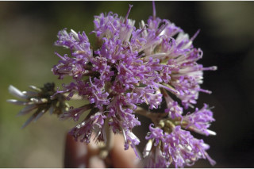
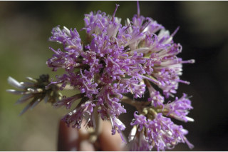

Medium sized trees, up to 15 m tall.
15 ಮೀ. ಎತ್ತರದವರೆಗೆ ಬೆಳೆಯುವ ಮಧ್ಯಮ ಗಾತ್ರದ ಮರಗಳು.
15 മീറ്റര്വരെ ഉയരത്തില് വളരുന്ന ഇടത്തരം മരങ്ങള്.
நடுத்தர உயரமுடைய மரங்கள், 15 மீ. வரை வளரக்கூடியது.
Bark brown; blaze blackish.
ತೊಗಟೆ ಕಂದು ಬಣ್ಣ. ಕಚ್ಚು ಮಾಡಿದ ಜಾಗ ಕಪ್ಪುಬಣ್ಣದಲ್ಲಿರುತ್ತದೆ.
പുറംതൊലിക്ക് തവിട്ട് നിറം; വെട്ട്പാടിന് കറുപ്പ്നിറം.
மரத்தின் பட்டை அரக்கு ( ப்ரவுன்) நிறமானது; உள்பட்டை கருமை நிறமானது.
Young branchlets terete, tomentose.
ಎಳೆಯ ಕಿರುಕೊಂಬೆಗಳು ದುಂಡಾಗಿದ್ದು ದಟ್ಟವಾದ ಮೃದು ತುಪ್ಪಳ ಸಹಿತವಾಗಿರುತ್ತದೆ.
ഇളംശിഖിരങ്ങള് ഉരുണ്ടതാണ്, നിറയെ രോമാവൃതവും.
நுனிக்கிளைகள் குறுக்குவெட்டுத் தோற்றத்தில் வளையமானது, உரோமங்களுடையது.
Leaves alternate, spiral, clustered at twig ends; petiole 0.6-2.6 cm long, subterete, tomentose; lamina 8.5-19 x 4-11 cm, obovate or broadly-obovate, apex acute or abruptly, shortly acuminate, base cuneate to acute, margin entire or sometimes distantly double serrate with alternate small and large tooth, chartaceous, tomentose beneath; midrib tomentose above; secondary_nerves 10-15 pairs, looped near margin; tertiary_nerves reticulo-percurrent.
ഏകാന്തര ക്രമത്തിലുളള ഇലകള് സര്പ്പിളാകൃതിയില്, കമ്പുകളുടെ അറ്റത്ത് കൂട്ടമായി ക്രമീകരിച്ചിരിക്കുന്നു; ഇലഞെട്ടിന് 0.6 മുതല് 2.6 സെ.മീ വരെ നീളം ഏതാണ്ട് ഉരുണ്ടിരിക്കുന്നു, കനത്ത രോമാവൃതമാണ്; പത്രഫലകത്തിന് 8.5 മുതല് 19 സെ.മീ വരെ നീളവും 4 മുതല് 11 സെ.മീ വരെ വീതിയും, അപ അണ്ഡാകാരമോ വീതിയേറിയ അപഅണ്ഡാകാരമോ ആണ്, പത്രാഗ്രം കൂര്ത്തതോ ചെറുവാലോട് കൂടിയതോ ആണ്, പത്രാധാരം ആപ്പാകാരംമുതല് കൂര്ത്തിരിക്കുന്നതോ ആണ്, അരികുകള് ചെറുതും വലുതും ദന്തങ്ങള് അനുക്രമമായി വരുന്ന രീതിയിലുളള, അകലത്തിലുളള ഇരട്ട ദന്തങ്ങളോട് കൂടിയതാണ്, കടലാസ് പോലത്തെ പ്രകൃതം, കീഴ്ഭാഗം കനത്ത രോമാവൃതമാണ്; മുഖ്യസിര മുകള്ഭാഗത്ത് രോമാവൃതമാണ്, ദ്വിതീയ ഞരമ്പുകള് 10 മുതല് 15 വരെ ജോഡികള്, അരികുകള്ക്കടുത്ത് വളഞ്ഞിരിക്കുന്നു; ത്രീതീയ ഞരമ്പുകള് പെര്കറന്റ് ജാലികമാണ്.
இலைகள் தனித்தவை, மாற்றுஅடுக்கமானவை, நுனிக்கிளையில் இலைகள் கூட்டமாக மற்றும் நெருக்கமாகமைந்தவை; இலைக்காம்பு 0.6-2.6 செ.மீ. நீளமானது, குறுக்குவெட்டுத் தோற்றத்தில் வட்டம் போன்றது, உரோமங்களுடையது; இலை அலகு 8.5-19 X 4-11 செ.மீ., தலைகீழ் முட்டை வடிவம் அல்லது அகன்ற தலைகீழ் முட்டை வடிவம், அலகின் நுனி கூரியது அல்லது சிறிய அதிக்கூரிய நுனியுடையது, அலகின் தளம் ஆப்பு வடிவானது முதல் கூரியது, அலகின் விளிம்பு முழுமையானது அல்லது பெரிய மற்றும் சிறிய ரம்ப பற்களுடையது; சார்ட்டேசியஸ், அலகின் பின்புறம் உரோமங்களுடையது; அலகின் மேற்பகுதியுலுள்ள மையநரம்பு உரோமங்களுடையது; இரண்டாம் நிலை நரம்புகள் 10-15 ஜோடிகள், மடிப்பு வளையம் போன்று விளிம்பில் ஒன்றோடொன்று இணைந்தவை; மூன்றாம் நிலை நரம்புகள் வலைப்பின்னல்-பெர்க்கரண்ட்.
Flowers in heads of large terminal panicled cymes, purple.
ಎಲೆಗಳು ಪರ್ಯಾಯ ಹಾಗೂ ಸುತ್ತ ಜೋಡನಾ ವ್ಯವಸ್ಥೆಯಲ್ಲಿದ್ದು ಕುಡಿಕೊಂಬೆಗಳ ತುದಿಯಲ್ಲಿ ಗುಂಪಾಗಿರುತ್ತದೆ. ಎಲೆತೊಟ್ಟು 0.6 ರಿಂದ 2.6ಸೆಂ.ಮೀ. ಉದ್ದ, ಉಪದುಂಡಾಕಾರವಾಗಿದ್ದು ದಟ್ಟವಾದ ಮೃದು ತುಪ್ಪಳ ಸಹಿತವಾಗಿರುತ್ತದೆ. ಪತ್ರ 8.5 ರಿಂದ 19 ಸೆಂ.ಮೀ. ಉದ್ದ, 4 ರಿಂದ 11ಸೆಂ.ಮೀ. ಅಗಲಹೊಂದಿದ್ದು, ಬುಗುರಿ ಅಥವಾ ವಿಶಾಲವಾದ ಬುಗುರಿ ಆಕಾರದಲ್ಲಿರುತ್ತದೆ. ಎಲೆ ತುದಿ ಚೂಪಾಗಿ ಅಥವಾ ಥಟ್ಟನೆ, ಮೊಟಕಾದ, ಕ್ರಮೇಣ ಚೂಪಾಗುವ ಮಾದರಿಯಲ್ಲಿದ್ದು ಬೆಣೆಯಾಕಾರದ ಅಥವಾ ಚೂಪಾದ ಎಲೆಬುಡವನ್ನು ಹೊಂದಿರುತ್ತದೆ; ಎಲೆಯ ಅಂಚು ನಯವಾಗಿರುತ್ತದೆ. ಕೆಲವು ಸಂದರ್ಭದಲ್ಲಿ ಹೆಚ್ಚು ಅಂತರ ಹೊಂದಿದ, ಪರ್ಯಾಯವಾಗಿ ಚಿಕ್ಕ ಮತ್ತ ದೊಡ್ಡ ದಂತಗಳನ್ನೊಳಗೊಂಡ ಜೋಡಿ ಗರಗಸದಂತ ಸಮೇತವಾಗಿರುತ್ತದೆ. ಪತ್ರ ಕಾಗದವನ್ನೋಲುವ ಮಾದರಿಯಲ್ಲಿದ್ದು ತಳಭಾಗದಲ್ಲಿ ದಟ್ಟಮೃದು ತುಪ್ಪಳವನ್ನು ಹೊಂದಿರುತ್ತದೆ; ಮಧ್ಯನಾಳ ಪತ್ರದ ಮೇಲ್ಭಾಗದಲ್ಲಿ ದಟ್ಟಮೃದು ತುಪ್ಪಳದಿಂದ ಕೂಡಿರುತ್ತದೆ; ಎರಡನೇ ದರ್ಜೆಯ ನಾಳಗಳು 10 ರಿಂದ 15 ಜೋಡಿಗಳಿದ್ದು ಪತ್ರದ ಅಂಚಿನ ಬಳಿ ಕುಣಿಕೆಗೊಂಡಿರುತ್ತವೆ. ತೃತೀಯ ದರ್ಜೆಯ ನಾಳಗಳು ಜಾಲಬಂಧ ನಾಲವಿನ್ಯಾಸಲ್ಲಿದ್ದು ಎಲೆದಂಡಿಗೆ ಅಡ್ಡವಾಗಿ ಕೂಡುತ್ತವೆ.
ഊതനിറത്തിലുളള പൂക്കള്, ഹെഡ്പൂങ്കുലയില് വലിയ ഉച്ഛസ്ഥപാനിക്കിള് സൈമുകളായി കാണുന്നു.
சிரமஞ்சரி பெரியது, தண்டின் நுனியில் காணப்படும் பேனிக்கிள்டு சைம், பர்புள் நிறமானது.
Achene, ribbed; 1-seeded, pappus uniseriate.
ಹೂಗಳು ಕೆನ್ನೀಲಿ ಬಣ್ಣ ಹೊಂದಿದ್ದು ತುದಿಯಲ್ಲಿನ ದೊಡ್ಡದಾದ, ಕವಲೊಡೆದ ಮಧ್ಯಾರಂಬಿ ಮಂಜರಿಯಲ್ಲಿನ ಚೆಂಡುಮಂಜರಿಯಲ್ಲಿರುತ್ತವೆ.
അക്കീനുകള് വരമ്പുകളോട് കൂടിയതാണ്; ഒറ്റവിത്ത് മാത്രം, പാപ്പസ് ഒരു നിരമാത്രം.
சிற்றுலர்கனி (அக்கீன்), வரித்தழும்புகளுடையவை; விதையுடையது, உரோமங்களுடையது.
 

 

 

 
